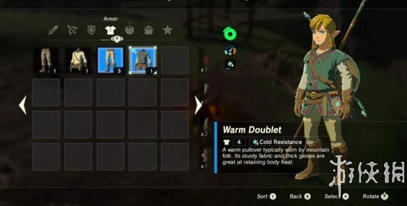
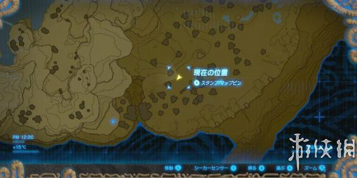
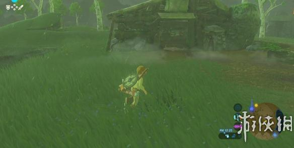

在塞尔达传说荒野之息里， 武器都有耐久度，用久了就会坏，但是防具却不会。今天小编就为大家带来塞尔达传说荒野之息防具推荐及获得方法，感兴趣的朋友快来看看吧！
防具推荐及获得方法
防寒服

防寒服的具体获得方法：
初始的台地上，在老人的家里(位置如下图)看到日记，给他做一道菜，材料是ポカポカ草の実(Spicy Pepper)、ハイラルバス(Hyrule Bass)、ケモノ肉(Raw Meat)。然后他就会给我们一件防寒服。

如果懒得做料理，初期你可以靠火把、辣椒强行爬上雪山。
在做完初期四个祠的教学挑战，获得滑翔伞之后，再次来到老人的屋子，你会发现一个宝箱，里面就是防寒服。
